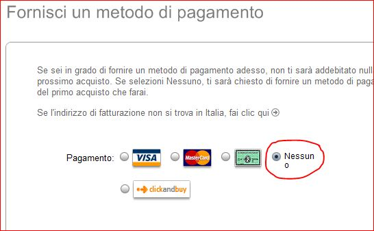

Aggiornamento: Questa Guida è valida solo alla versione 10.0.1.22 di iTunes!! Probabilmente non funzionerà con le versioni successive!
Molti sapranno che ormai non è più (teoricamente) possibile creare un Account Apple senza registrare la propria Carta di Credito. Infatti se apriamo iTunes, andiamo su iTunes Store e premiamo su Accedi (in alto a destra), dopo aver accettato i Termini e le Condizioni di Utilizzo ed aver inserito una E-Mail e una Password, ci viene visualizzata questa pagina:
{kind=link}
Come potete notare manca la dicitura Nessuno, che una volta appariva di Default.
Per farla apparire bisogna fare quello che oserei chiamare un Trucchetto! 
Ecco come faremo. Innanzitutto apriamo iTunes. Stavolta però clicchiamo su “App Store” e scegliamo a caso un’applicazione gratuita come nell’esempio:

A questo punto clicchiamo sulla dicitura Gratis, come se volessimo scaricarlo. Immediatamente ci apparirà un pop-up di iTunes che ci chiede un ID Apple. Clicchiamo su “Crea un nuovo Account”, e seguiamo la procedura (Accettiamo i temini e le condizioni d’uso, mettiamo una e-mail e la password, ecc…). A questo punto ci apparirà questa pagina:
{kind=link}
E come per magia eccolo lì! Modalità di pagamento: “Nessuno“! In ogni caso dovremo inserire i nostri dati, mentre la fattura arriverà per E-Mail. 
Spero vi sia stata utile questa guida. Per domande o suggerimenti lasciate un commento. Vi risponderò in 24 ore!